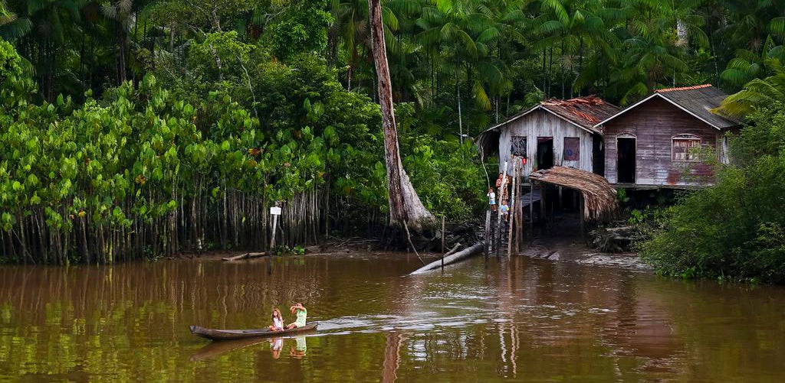

Sobre Nós
Hello World! Estou aqui para compartilhar a incrível jornada que foi desenvolver o nosso site sobre a história e cultura da Amazônia. Somos um grupo de quatro estudantes da área da Tecnologia da Informação (TI) apaixonados por tecnologia. O nosso projeto surgiu do desejo de combinar as nossas habilidades técnicas com o nosso interesse pela cultura e biodiversidade dessa região única. Cada etapa, ao utilizar HTML, CSS e JavaScript, representou um desafio e tanto.
A nossa missão é educar, inspirar e sensibilizar o público sobre a rica história, as tradições e a biodiversidade da Amazônia, promovendo a conscientização e o respeito pela cultura e pelo meio ambiente dessa região singular. Por meio do nosso site interativo e informativo, buscamos partilhar o conhecimento, preservar as tradições e fomentar a valorização e a proteção do patrimônio cultural e natural da Amazônia, contribuindo assim para a preservação desse local vital para o equilíbrio ecológico do nosso planeta.
Desde o início, distribuímos as tarefas de forma colaborativa e eficiente. Maria e Raimundo dedicaram-se à programação, investindo horas de trabalho para assegurar que a estrutura e a funcionalidade do site estivessem impecáveis. Sem o talento e a habilidade deles, não teríamos alcançado o resultado final tão incrível. Yan e Jodenildon mergulharam nas pesquisas sobre a história e as tradições da Amazônia, garantindo que o conteúdo fosse preciso, envolvente e educativo. As suas contribuições foram fundamentais para enriquecer o site com informações valiosas e interessantes que cativam e educam os visitantes. Cada linha de código, cada pesquisa aprofundada e cada elemento visual criado representou uma peça essencial nesse quebra-cabeça colaborativo. Juntos, formamos uma equipa coesa e inspiradora, unindo habilidades técnicas, conhecimento e paixão em prol de um objetivo comum: partilhar o encanto e a importância cultural da Amazônia com o mundo.
O nosso objetivo é criar um site interativo e educativo que transmita de forma envolvente e informativa a riqueza da história, tradições e biodiversidade da Amazônia. Procuramos promover a conscientização, a valorização e o respeito pela cultura e pelo meio ambiente amazônicos, partilhando conhecimento, preservando tradições e encorajando a proteção desse patrimônio cultural e natural tão relevante para a humanidade e para o planeta. Este objetivo reflete o propósito central do projeto, que é educar e sensibilizar o público sobre a importância da Amazônia, promover a preservação da sua cultura e biodiversidade e inspirar ações positivas em prol da conservação desse ecossistema crucial.
Junte-se a nós nesta missão de educar, inspirar e sensibilizar o mundo sobre a história e cultura da Amazônia. Juntos, podemos fazer a diferença e promover a conscientização e preservação desse valioso patrimônio.